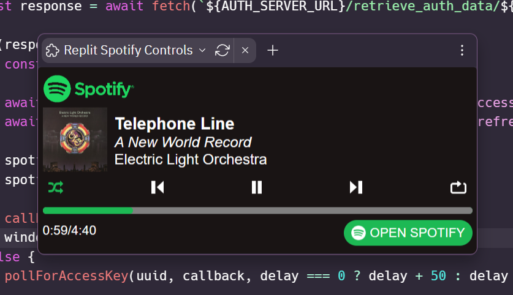
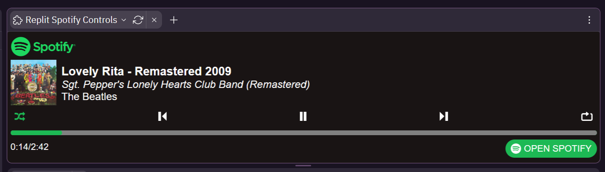
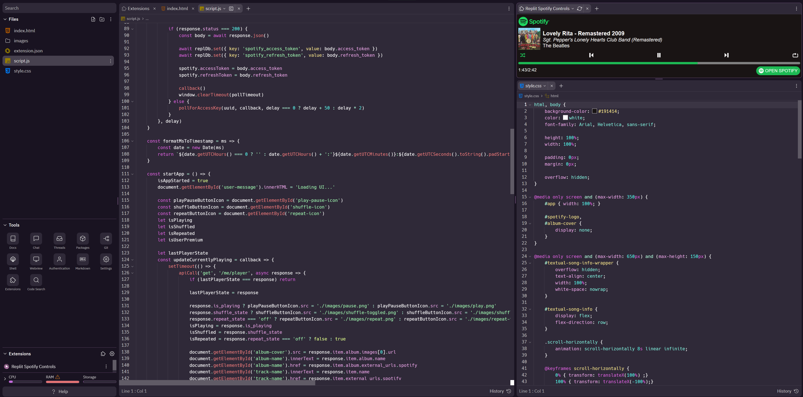
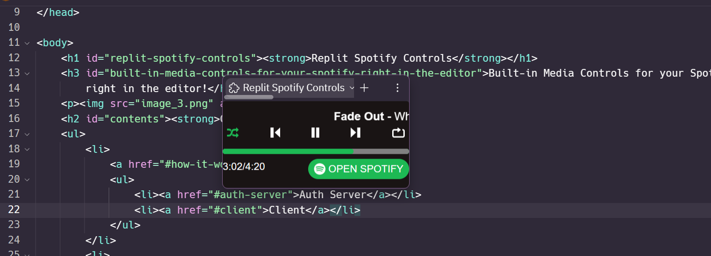

The extension is made up of two parts, the extension itself, and an authorization server in another repl. These both communicate together to create a secure connection with the Spotify API. Lets start with the server.
The auth server handles authorization with Spotify Oauth and is responsible for retrieving spotify access tokens for the client. In order the Spotify API, each user needs their own personal access token which is linked to their account specifically. This is not to be confused with the client secret. The client secret is the token used to allow the server access the API to retrieve access tokens on the user's behalf. The important difference is that access tokens can be exposed to the client, while the client secret cannot, hence the requirement of a server.
In order to retrieve an access token users first authorize the application through a Spotify login page. Once the user has authorized with Spotify, the server uses Spotify's API to retrieve an access token for the client, which is stored under a unique UUID which is linked to a state the client has generated. The client can then get the token if it provides the correct UUID and the state the client previously generated. This prevents attacks gaining access to users access tokens. Access tokens are deleted off the server once the client has retrieved it's token or are automatically deleted after 10 minutes if the client fails to.
The server is also responsible for supplying a refresh token to the client. Spotify access tokens automatically expire after one hour, however a new access token can be retrieved with a refresh token. Getting a new access token with a refresh token still requires the client secret, so this has to be done server side.
| Access Token | Refresh Token | Client Secret | |
|---|---|---|---|
| Exposable to Client? | Yes | Yes | No |
| Grants Access To | Spotify Web API | New Access Tokens | Spotify Oauth API |
| Stored By | Client Server (Temporary) |
Client Server (Temporary) |
Server |
The client is the extension that users will actually see, as shown in the attached screenshots. It is a simple HTML/CSS/JS webapp with basic controls that coincide with the ones provided by Spotify.
Note, in order to comply with Spotify's design guidelines users of Spotify Free will only have the option to play and pause songs in the client.
Upon startup the extension checks if an access token and refresh token is stored. If there is previously stored tokens present, it will attempt to start the player. If no tokens are found it will start the authorization process. The authorization process is shown below.
Currently the extension I am hosting is only usable by people I have pre-approved in the Spotify Developer Dashboard. Any other users will not be able to auth. This is because my application is still in Developer Mode, which gives it a more restrictive ratelimit and only allows 25 whitelisted users to authorize with the application. It can take 6 weeks to get approved to gain full access to the API.
TL;DR: Limited access to Spotify API currently so you need to fork this to use it, sorry!
However, you can easily fork the server and client and setup your own auth server and extension client. In order to do so, you will need to do some minor prep work.
config.js in the Repl for the auth server. There are a few values you need to
set. The file will look like this:
module.exports = {
server: {
keys: [ '<some-random-string-of-characters>' ]
, port: 3030
}
, spotify: {
clientID: '<spotify-client-id>'
, clientSecret: '<spotify-client-secret>'
, redirectURI: 'https://<your-repl-name.repl.co>/handle_auth/'
}
}
server.keys array, place a string of random characters. This is used to sign the session
cookies to ensure they aren't being changed by any external sources. If you are hosting this in a repl,
this should be stored as a secret and accessed using process.env.VARIABLE_NAME spotify.clientID should be set to a string of the ID of your application in the Spotify
Developer Dashboard.spotify.clientSecret should be set to a string containing the client secret obtained from the
Spotify Developer Dashboard as well. If you are hosting this in a repl, this should be stored as a secret
and accessed using process.env.VARIABLE_NAMEspotify.redirectURI should be set to your repl's webview URL with the path
/handle_auth/. If you are unsure what your webview URL is, this should typically be set to
https://name-of-your-repl.your-username.repl.co/handle_auth/. It is important that the URL ends
with a "/".
You will need to specify a callback URI in the Developer Dashboard of your Spotify application. This is fairly simple and takes only a moment.
spotify.redirectURI from your
config.js from your auth server. You should have set this in the Server Setup
section above. Remember, it should end in /handle_auth/, including the trailing "/".
The client needs to know what server to communicate with. This is the simplest step and only requires changing one value.
script.js, at the top there is a variable named AUTH_SERVER_URL. Set this to
the URL of your auth server. Be sure that it doesn't end in a "/". It should look
something like: const AUTH_SERVER_URL = 'https://your-auth-server.your-username.repl.co.
Hey there, thanks for the interest in my extension and I hope you can get it working properly! Feel free to reach out to me for help. Anyways, I'd like to say if you do fork my repl and host the extension yourself, please do not post it in the extensions store. I worked very hard on this and I'm just waiting on approval from Spotify so I can actually release it.
Once the extension is released you are still free to fork the repls if you'd like to host it yourself still and I'll try my best to keep this guide up to date!
Anyways, happy listening and coding!
  